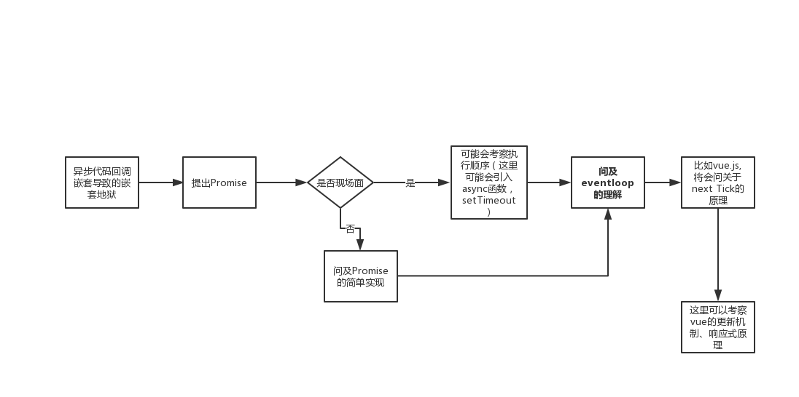
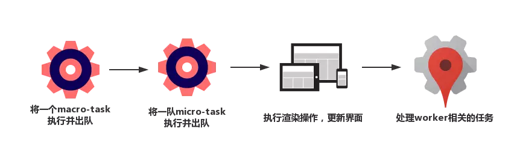

<!DOCTYPE html>
<html>
<head><meta name="generator" content="Hexo 3.8.0">
  <meta charset="utf-8">
  
  <title>《面试系列》之什么是event loop | maczyt的网络日志</title>
  <meta name="viewport" content="width=device-width, initial-scale=1, maximum-scale=1">
  <meta name="description" content="event loop指的是一种运行机制，规定了JS引擎是如何运行代码的。结合我为数不多的面试经历来看，基本算是必中的考点。如果要问到event loop,大致有如下流程（下面算是个人的经验总结，难免有遗漏之处，还请指正😊，顺序可能会有所打乱）：  为什么会有Event loop？（Why)由于JS是单线程执行的，所以任务(代码)的执行需要进行排队。任务分为两种：同步和异步，针对异步任务，首先会被">
<meta name="keywords" content="JS,基础,面试">
<meta property="og:type" content="article">
<meta property="og:title" content="《面试系列》之什么是event loop">
<meta property="og:url" content="https://maczyt.github.io/2019/08/13/《面试系列》之什么是event-loop/index.html">
<meta property="og:site_name" content="maczyt的网络日志">
<meta property="og:description" content="event loop指的是一种运行机制，规定了JS引擎是如何运行代码的。结合我为数不多的面试经历来看，基本算是必中的考点。如果要问到event loop,大致有如下流程（下面算是个人的经验总结，难免有遗漏之处，还请指正😊，顺序可能会有所打乱）：  为什么会有Event loop？（Why)由于JS是单线程执行的，所以任务(代码)的执行需要进行排队。任务分为两种：同步和异步，针对异步任务，首先会被">
<meta property="og:locale" content="default">
<meta property="og:image" content="https://maczyt.github.io/2019/08/13/《面试系列》之什么是event-loop/1.png">
<meta property="og:image" content="https://maczyt.github.io/2019/08/13/《面试系列》之什么是event-loop/2.png">
<meta property="og:updated_time" content="2019-08-13T15:34:40.300Z">
<meta name="twitter:card" content="summary">
<meta name="twitter:title" content="《面试系列》之什么是event loop">
<meta name="twitter:description" content="event loop指的是一种运行机制，规定了JS引擎是如何运行代码的。结合我为数不多的面试经历来看，基本算是必中的考点。如果要问到event loop,大致有如下流程（下面算是个人的经验总结，难免有遗漏之处，还请指正😊，顺序可能会有所打乱）：  为什么会有Event loop？（Why)由于JS是单线程执行的，所以任务(代码)的执行需要进行排队。任务分为两种：同步和异步，针对异步任务，首先会被">
<meta name="twitter:image" content="https://maczyt.github.io/2019/08/13/《面试系列》之什么是event-loop/1.png">
  
    <link rel="alternate" href="/atom.xml" title="maczyt的网络日志" type="application/atom+xml">
  
  
    <link rel="icon" href="/favicon.ico">
  
  
    
  
  <link rel="stylesheet" href="/css/style.css">
  

</head>
</html>
<body>
  <div id="container">
    <div id="wrap">
      <header id="header">
  <div id="banner"></div>
  <div id="header-outer" class="outer">
    
    <div id="header-inner" class="inner">
      <nav id="sub-nav">
        
          <a id="nav-rss-link" class="nav-icon" href="/atom.xml" title="RSS Feed"></a>
        
        <a id="nav-search-btn" class="nav-icon" title="搜索"></a>
      </nav>
      <div id="search-form-wrap">
        <form action="//google.com/search" method="get" accept-charset="UTF-8" class="search-form"><input type="search" name="q" class="search-form-input" placeholder="Search"><button type="submit" class="search-form-submit">&#xF002;</button><input type="hidden" name="sitesearch" value="https://maczyt.github.io"></form>
      </div>
      <nav id="main-nav">
        <a id="main-nav-toggle" class="nav-icon"></a>
        
          <a class="main-nav-link" href="/">首页</a>
        
          <a class="main-nav-link" href="/archives">归档</a>
        
          <a class="main-nav-link" href="/about">关于</a>
        
      </nav>
      
    </div>
    <div id="header-title" class="inner">
      <h1 id="logo-wrap">
        <a href="/" id="logo">maczyt的网络日志</a>
      </h1>
      
    </div>
  </div>
</header>
      <div class="outer">
        <section id="main"><article id="post-《面试系列》之什么是event-loop" class="article article-type-post" itemscope="" itemprop="blogPost">
  <div class="article-meta">
    <a href="/2019/08/13/《面试系列》之什么是event-loop/" class="article-date">
  <time datetime="2019-08-13T15:30:32.000Z" itemprop="datePublished">2019-08-13</time>
</a>
    
  </div>
  <div class="article-inner">
    
    
      <header class="article-header">
        
  
    <h1 class="article-title" itemprop="name">
      《面试系列》之什么是event loop
    </h1>
  

      </header>
    
    <div class="article-entry" itemprop="articleBody">
      
        <!-- Table of Contents -->
        
        <p><code>event loop</code>指的是一种运行机制，规定了JS引擎是如何运行代码的。结合我为数不多的面试经历来看，基本算是必中的考点。如果要问到<code>event loop</code>,大致有如下流程（下面算是个人的经验总结，难免有遗漏之处，还请指正😊，顺序可能会有所打乱）：</p>
<p></p>
<h2 id="为什么会有Event-loop？（Why"><a href="#为什么会有Event-loop？（Why" class="headerlink" title="为什么会有Event loop？（Why)"></a>为什么会有Event loop？（Why)</h2><p>由于JS是单线程执行的，所以任务(代码)的执行需要进行排队。任务分为两种：同步和异步，针对异步任务，首先会被推到任务队列中，然后根据event loop机制进行执行。</p>
<h2 id="event-loop"><a href="#event-loop" class="headerlink" title="event loop"></a>event loop</h2><p>对于此需要了解到两个很重要的知识点：<strong>宏任务</strong> 和 <strong>微任务</strong>。 简单的理解为两个任务队列。</p>
<h3 id="宏任务"><a href="#宏任务" class="headerlink" title="宏任务"></a>宏任务</h3><p>当执行以下方法函数，将把其<code>callback</code>推到宏任务队列中</p>
<ol>
<li><code>setTimeout</code>、<code>setInterval</code>和<code>setImmediate</code></li>
<li><code>I/O操作</code>、<code>UI渲染</code>、<code>script脚本执行</code></li>
<li><code>MessageChannel</code>(Vue的nexttick有使用)</li>
</ol>
<h3 id="微任务"><a href="#微任务" class="headerlink" title="微任务"></a>微任务</h3><p>同理，不过是推到微任务队列</p>
<ol>
<li><code>Promise</code></li>
<li><code>MutationObserver</code></li>
<li><code>process.nextTick</code> (Node)</li>
</ol>
<h3 id="举例"><a href="#举例" class="headerlink" title="举例"></a>举例</h3><figure class="highlight js"><table><tr><td class="gutter"><pre><span class="line">1</span><br><span class="line">2</span><br><span class="line">3</span><br><span class="line">4</span><br><span class="line">5</span><br><span class="line">6</span><br><span class="line">7</span><br><span class="line">8</span><br><span class="line">9</span><br><span class="line">10</span><br><span class="line">11</span><br><span class="line">12</span><br><span class="line">13</span><br><span class="line">14</span><br><span class="line">15</span><br></pre></td><td class="code"><pre><span class="line"></span><br><span class="line">setTimeout(<span class="function"><span class="keyword">function</span> <span class="title">callback1</span>(<span class="params"></span>) </span>&#123;</span><br><span class="line">  <span class="built_in">console</span>.log(<span class="string">'a'</span>);</span><br><span class="line">&#125;, <span class="number">0</span>);</span><br><span class="line"></span><br><span class="line"><span class="keyword">const</span> p = <span class="keyword">new</span> <span class="built_in">Promise</span>(<span class="function"><span class="keyword">function</span> <span class="title">callback2</span>(<span class="params">resolve</span>) </span>&#123;</span><br><span class="line">  <span class="built_in">console</span>.log(<span class="string">'b'</span>);</span><br><span class="line">  resolve();</span><br><span class="line">&#125;);</span><br><span class="line"></span><br><span class="line">p.then(<span class="function"><span class="keyword">function</span> <span class="title">callback3</span>(<span class="params"></span>) </span>&#123;</span><br><span class="line">  <span class="built_in">console</span>.log(<span class="string">'c'</span>);</span><br><span class="line">&#125;);</span><br><span class="line"></span><br><span class="line"><span class="built_in">console</span>.log(<span class="string">'d'</span>);</span><br></pre></td></tr></table></figure>
<p>首先这块代码可以理解为一个<code>script</code>脚本，所以代码执行其实是从一个宏任务开始。<br>👇<br>当我执行<code>setTimeout</code>代码，这个时候会通过线程在0ms(不过浏览器最小会计算成4ms)后把<code>callback1</code>推到宏任务队列中。<br>👇<br>这个时候继续执行，实例Promise对象是同步的，所以这里会立即执行<code>callback2</code>，输出’b’,然后修改该Promise对象的状态为<code>resolved</code>。<br>👇<br>因为当前对象p是<code>resolved</code>状态所以会执行对应的then方法，且将<code>callback3</code>推到微任务队列中。<br>👇<br>代码继续执行，输出’d’,主线程代码执行完毕。与微任务进行通信，并取出整队队列，依次执行。<br>👇<br>因为微任务队列只有<code>callback3</code>，执行输出’c’。这个时候一次eventloop循环结束，开始下一个循环。<br>👇<br>取出宏任务队列第一个任务，也就是上面推进的<code>callback1</code>，执行输出’a’.</p>
<p>所以最终输出’b’ -&gt; ‘d’ -&gt; ‘c’ -&gt; ‘a’.不知你答对了吗?</p>
<h2 id="Vue的nextTick机制"><a href="#Vue的nextTick机制" class="headerlink" title="Vue的nextTick机制"></a>Vue的nextTick机制</h2><p>在一开始学习vue的时候，经常会遇到修改数据后，获取的DOM并不是最新的，然后查看资料说需要通过异步来处理，这里其实就是运用了event loop的机制。</p>
<figure class="highlight html"><table><tr><td class="gutter"><pre><span class="line">1</span><br><span class="line">2</span><br><span class="line">3</span><br><span class="line">4</span><br><span class="line">5</span><br><span class="line">6</span><br><span class="line">7</span><br><span class="line">8</span><br><span class="line">9</span><br><span class="line">10</span><br><span class="line">11</span><br><span class="line">12</span><br><span class="line">13</span><br><span class="line">14</span><br><span class="line">15</span><br><span class="line">16</span><br><span class="line">17</span><br><span class="line">18</span><br></pre></td><td class="code"><pre><span class="line"><span class="tag">&lt;<span class="name">template</span>&gt;</span></span><br><span class="line">  <span class="tag">&lt;<span class="name">p</span>&gt;</span>&#123;&#123;count&#125;&#125;<span class="tag">&lt;/<span class="name">p</span>&gt;</span></span><br><span class="line"><span class="tag">&lt;/<span class="name">template</span>&gt;</span></span><br><span class="line"></span><br><span class="line"><span class="tag">&lt;<span class="name">script</span>&gt;</span><span class="undefined"></span></span><br><span class="line"><span class="javascript"><span class="keyword">export</span> <span class="keyword">default</span> &#123;</span></span><br><span class="line"><span class="undefined">  data() &#123;</span></span><br><span class="line"><span class="javascript">    <span class="keyword">return</span> &#123;</span></span><br><span class="line"><span class="undefined">      count: 0,</span></span><br><span class="line"><span class="undefined">    &#125;</span></span><br><span class="line"><span class="undefined">  &#125;,</span></span><br><span class="line"><span class="undefined">  mounted() &#123;</span></span><br><span class="line"><span class="javascript">    <span class="keyword">this</span>.count ++;</span></span><br><span class="line"><span class="javascript">    <span class="keyword">this</span>.count ++;</span></span><br><span class="line"><span class="javascript">    <span class="comment">// console.log(this.$el.textContent === ?) 这里我们发现输出为0，也就是初始值</span></span></span><br><span class="line"><span class="undefined">  &#125;</span></span><br><span class="line"><span class="undefined">&#125;</span></span><br><span class="line"><span class="undefined"></span><span class="tag">&lt;/<span class="name">script</span>&gt;</span></span><br></pre></td></tr></table></figure>
<p>简单的解释，执行<code>mounted</code>方法时，当第一次<code>this.count ++</code>时，首先会对count数据进行自增且Vue会将count对应Watcher的update方法推到微任务中；第二次<code>this.count ++</code>时，根据count对应Watcher对象的id来判断是否已经处理而选择跳过，只对count进行自增。然后在执行微任务中的update方法时对对应的模板进行更新操作。</p>
<p>由于微任务队列的执行顺序，所以我们只需引入一个微任务，该任务即可获取最新数据的DOM。或者通过下一次event loop循环的宏任务也可。</p>
<hr>
<p>看过掘金小册《前端性能优化原理与实践》中有张介绍event loop的图。</p>
<p></p>
<p>关于执行完微任务后再执行渲染操作，这个让我费解了许久，因为根据我们上面的解释，也就是在update方法后面的微任务即可获取到最新数据。</p>
<p>后面，解释是该渲染操作是把DOM进行paint，之前的update方法已经对DOM进行了修改处理。两者不是同一个概念。</p>

      
    </div>
    <footer class="article-footer">
      <a data-url="https://maczyt.github.io/2019/08/13/《面试系列》之什么是event-loop/" data-id="cjyzz3c1u000br4vvzd84oxf0" class="article-share-link">分享</a>
      
      
      
  <ul class="article-tag-list"><li class="article-tag-list-item"><a class="article-tag-list-link" href="/tags/JS/">JS</a></li><li class="article-tag-list-item"><a class="article-tag-list-link" href="/tags/基础/">基础</a></li><li class="article-tag-list-item"><a class="article-tag-list-link" href="/tags/面试/">面试</a></li></ul>

    </footer>
  </div>
  
    
 <script src="/jquery/jquery.min.js"></script>
  <div id="random_posts">
    <h2>推荐文章</h2>
    <div class="random_posts_ul">
      <script>
          var random_count =4
          var site = {BASE_URI:'/'};
          function load_random_posts(obj) {
              var arr=site.posts;
              if (!obj) return;
              // var count = $(obj).attr('data-count') || 6;
              for (var i, tmp, n = arr.length; n; i = Math.floor(Math.random() * n), tmp = arr[--n], arr[n] = arr[i], arr[i] = tmp);
              arr = arr.slice(0, random_count);
              var html = '<ul>';
            
              for(var j=0;j<arr.length;j++){
                var item=arr[j];
                html += '<li><strong>' + 
                item.date + ':&nbsp;&nbsp;<a href="' + (site.BASE_URI+item.uri) + '">' + 
                (item.title || item.uri) + '</a></strong>';
                if(item.excerpt){
                  html +='<div class="post-excerpt">'+item.excerpt+'</div>';
                }
                html +='</li>';
                
              }
              $(obj).html(html + '</ul>');
          }
          $('.random_posts_ul').each(function () {
              var c = this;
              if (!site.posts || !site.posts.length){
                  $.getJSON(site.BASE_URI + 'js/posts.js',function(json){site.posts = json;load_random_posts(c)});
              } 
               else{
                load_random_posts(c);
              }
          });
      </script>
    </div>
  </div>

    
<nav id="article-nav">
  
  
    <a href="/2019/08/03/《面试系列》之什么是BFC/" id="article-nav-older" class="article-nav-link-wrap">
      <strong class="article-nav-caption">下一篇</strong>
      <div class="article-nav-title">《面试系列》之什么是BFC?</div>
    </a>
  
</nav>

  
</article>
 
     
  <div class="comments" id="comments">
    
     
       
      <div id="cloud-tie-wrapper" class="cloud-tie-wrapper"></div>
    
       
      
      
           <div id="gitment_comments"></div>
    
  </div>
 
  

</section>
           
    <aside id="sidebar">
  
    

  
    
    <div class="widget-wrap">
    
      <div class="widget" id="toc-widget-fixed">
      
        <strong class="toc-title">文章目录</strong>
        <div class="toc-widget-list">
              <ol class="toc"><li class="toc-item toc-level-2"><a class="toc-link" href="#为什么会有Event-loop？（Why"><span class="toc-number">1.</span> <span class="toc-text">为什么会有Event loop？（Why)</span></a></li><li class="toc-item toc-level-2"><a class="toc-link" href="#event-loop"><span class="toc-number">2.</span> <span class="toc-text">event loop</span></a><ol class="toc-child"><li class="toc-item toc-level-3"><a class="toc-link" href="#宏任务"><span class="toc-number">2.1.</span> <span class="toc-text">宏任务</span></a></li><li class="toc-item toc-level-3"><a class="toc-link" href="#微任务"><span class="toc-number">2.2.</span> <span class="toc-text">微任务</span></a></li><li class="toc-item toc-level-3"><a class="toc-link" href="#举例"><span class="toc-number">2.3.</span> <span class="toc-text">举例</span></a></li></ol></li><li class="toc-item toc-level-2"><a class="toc-link" href="#Vue的nextTick机制"><span class="toc-number">3.</span> <span class="toc-text">Vue的nextTick机制</span></a></li></ol>
          </div>
      </div>
    </div>

  
    

  
    
  
    
  
    

  
    
  
    <!--微信公众号二维码-->


  
</aside>

      </div>
      <footer id="footer">
  
  <div class="outer">
    <div id="footer-left">
      &copy; 2014 - 2019 maczyt&nbsp;|&nbsp;
      主题 <a href="https://github.com/giscafer/hexo-theme-cafe/" target="_blank">Cafe</a>
    </div>
     <div id="footer-right">
      联系方式&nbsp;|&nbsp;369280416@qq.com
    </div>
  </div>
</footer>
 <script src="/jquery/jquery.min.js"></script>
    </div>
    <nav id="mobile-nav">
  
    <a href="/" class="mobile-nav-link">首页</a>
  
    <a href="/archives" class="mobile-nav-link">归档</a>
  
    <a href="/about" class="mobile-nav-link">关于</a>
  
</nav>
    
<script>
// Elevator script included on the page, already.
window.onload = function() {
  var elevator = new Elevator({
    selector:'.back-to-top-btn',
    element: document.querySelector('.back-to-top-btn'),
    duration: 1000 // milliseconds
  });
}
</script>
      

  
    <script>
      var cloudTieConfig = {
        url: document.location.href, 
        sourceId: "",
        productKey: "e2fb4051c49842688ce669e634bc983f",
        target: "cloud-tie-wrapper"
      };
    </script>
    <script src="https://img1.ws.126.net/f2e/tie/yun/sdk/loader.js"></script>
    

  


<!-- author:forvoid begin -->
<!-- author:forvoid begin -->

  <link rel="stylesheet" href="https://imsun.github.io/gitment/style/default.css">
  <script src="https://imsun.github.io/gitment/dist/gitment.browser.js"></script> 
  <script>
  var gitment = new Gitment({
    // id: '页面 ID', // 可选。默认为 location.href
    owner: 'maczyt',
    repo: 'maczyt.github.io',
    oauth: {
    client_id: 'ec909c607ca0603ee69f',
    client_secret: '611d57c463dd5cbcef431a48c0ff777679387238',
    }
  })
  gitment.render(document.getElementById("gitment_comments"))
</script>


<!-- author:forvoid end -->

<!-- author:forvoid end -->


  
    <script type="text/x-mathjax-config">
      MathJax.Hub.Config({
        tex2jax: {
          inlineMath: [ ['$','$'], ["\\(","\\)"]  ],
          processEscapes: true,
          skipTags: ['script', 'noscript', 'style', 'textarea', 'pre', 'code']
        }
      })
    </script>

    <script type="text/x-mathjax-config">
      MathJax.Hub.Queue(function() {
        var all = MathJax.Hub.getAllJax(), i;
        for (i=0; i < all.length; i += 1) {
          all[i].SourceElement().parentNode.className += ' has-jax';
        }
      })
    </script>
    <script type="text/javascript" src="https://cdn.rawgit.com/mathjax/MathJax/2.7.1/MathJax.js?config=TeX-AMS-MML_HTMLorMML"></script>
  


 <script src="/js/is.js"></script>


  <link rel="stylesheet" href="/fancybox/jquery.fancybox.css">
  <script src="/fancybox/jquery.fancybox.pack.js"></script>


<script src="/js/script.js"></script>
<script src="/js/elevator.js"></script>
  </div>
</body>
</html>